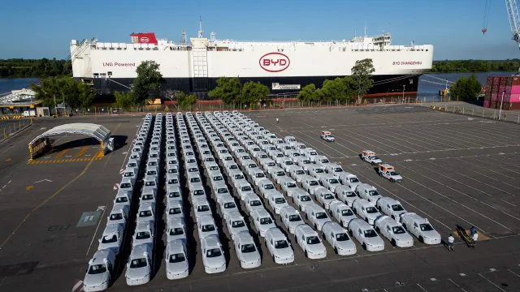

Dubbel zoveel Chinese auto's verkocht in België in een jaar tijd

De Belgische particuliere autokoper heeft geen schroom meer om met een Chinese auto te rijden. De verkoop van Chinese merken in ons land is in een jaar tijd verdubbeld.
In de eerste helft van dit jaar zakte de autoverkoop in ons land met 1,7 procent. Dat blijkt uit de inschrijvingscijfers van nieuwe auto's die de autosectorfederatie Febiac heeft gepubliceerd. De daling is het gevolg van een mindere verkoop van bedrijfswagens met 4,1 procent. De verkoop van nieuwe auto's aan particulieren steeg met 1,3 procent.
Van de malaise in de markt hebben de Chinese merken helemaal geen last. In de eerste zes maanden verkochten alle Chinese merken samen al evenveel nieuwe auto's in ons land als in heel 2025.
MG blijft het grootste Chinese merk en zag zijn verkopen bijna verdrievoudigen tot 5.722 voertuigen. Die groei wordt ietwat vertekend, omdat MG de import in België vanaf vandaag zelf regelt en de vorige importeur Astara nog zijn laatste voorraden moest inschrijven. Daarom gaf MG de voorbije maanden grote kortingen, waardoor het merk in juni zelfs het op zeven na best verkochte automerk van België was. 'De particulier heeft ons inderdaad ontdekt. 70 procent van onze klanten is een particulier', zegt Astara-woordvoerder Bart Hendriks.
BYD, dat het op een na grootste Chinese merk in ons land is, zag zijn verkoop in het eerste halfjaar verdubbelen tot meer dan 3.600 auto's. Stellantis-partner Leapmotor, dat zijn auto's via Peugeot-, Opel- en Fiat-dealers verkoopt, is nu het Chinese nummer drie.
Hybrides
Alle Chinese merken samen zijn goed voor een marktaandeel van 7,5 procent in ons land. Dat is nog altijd aanzienlijk minder dan de marktleider BMW in zijn eentje (11,2%), maar het is wel een fikse sprong van 4 procentpunt in een jaar.
De belangstelling van de particuliere autokoper voor Chinese merken bleek in januari al op het Autosalon in Brussel. De stands van BYD, MG, maar ook Xpeng en Nio werden drukbezocht. Terwijl veel Chinese merken aanvankelijk de Europese markt betraden met volledig elektrische auto's, hebben ze na de invoering van aanzienlijke Europese invoerheffingen op Chinese e-auto's vooral ingezet op de import van tariefloze hybrides. Die zijn inmiddels razendpopulair bij particuliere autokopers, hoewel uit de Febiac-cijfers ook blijkt dat particulieren steeds vaker bereid zijn toch een volledig elektrische auto te kopen.
Voor de eerste keer steeg het aandeel e-auto's in de particuliere autoverkoop boven 10 procent. Naast de introductie van meer betaalbare elektrische auto's, zoals de Renault Twingo, waren ook de gestegen benzine- en dieselprijzen voor veel particulieren een reden om naar een elektrische auto over te stappen.
Bron: De Tijd